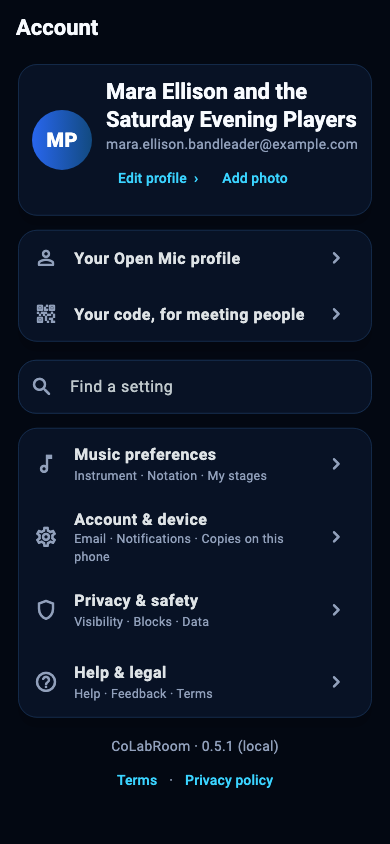

For the music you have in you.
Where music
lives.
Catch an idea. Make it a song.
Play it together.
An app for musicians. Free during the beta.
From the first idea
Stay with
the song.
A melody on your phone. A line worth keeping. The recording, words, chords and people that help it become something.
An idea, kept.
Before the moment
gets away.
Record an idea on your phone. Keep it for later in Ideas. Naming and organising can wait.
Meet IdeasA page to work on
Words. Chords.
Your way of reading.
Keep the music together, then read it the way that makes sense to you.
Explore the song sheetCounty Line
Key of C
Take the long way home
Leave a little room for the night
A place for every part
Someone brings
something new.
Record a part. Hear it with the song. Keep the individual recordings together without writing over each other.
Explore TakesFind your way into it
That tricky bit?
Stay there a while.
Loop a passage. Slow the recording down. Read the song your way and practise your part.
Explore PractiseNo recording or playback. Available tools vary by platform and beta build. What a recording can tell you →
Something useful. Right now.
Bring what
you have.
Free music tools. No account needed.
Recording tools upload audio for analysis. Chart tools work in your browser. Each tool explains its own limits and privacy.
The Open Mic
Meet through
the music.
A song. The person making it. What they are asking for. Listen first, then offer a part when it feels right.
Find your peopleYour own room
Make room for
your people.
Keep the song and the conversation in the same place. Words, recordings, shared sets and calls, for the people in your room.
Step into a roomPrivate to members. Calls do not record automatically.
New in October 2026 · not on the beta's phones yet
One set.
Every stand.
The leader calls the next song. Everyone keeps their own reading.
From rehearsal to the stageEm D
F♯m E
6m 5
Example shared set. Leading a team and keeping a stage are 18+. See the whole night →
A little practice.
A little closer.
Tune up, loop a passage, or take the song slowly. Tools vary with your recording, sheet and platform.
Find your practice space Learn with your own songMake something. Keep something.
Your music
can leave with you.
Save the mix. Take the individual recordings into your DAW. Print the song sheet and put it on a stand.
Take it with youAudio saving and export are available in the phone app. Export is not a paid restriction.
Your way of playing
Make it yours.
The key you sing in. The way you read. The settings that make the app feel like your own, with a quick search when you need it.
See the ways to read your song
A small beta.
A real invitation.
Free during the beta. Phone apps are in testing; store releases are not announced. Teams and the new age line are not on the beta's phones yet.
13 to start. Some doors at 18.
From 13: your own rooms, calls with your room, and Clef. From 18: listing yourself or a song on the Open Mic and Open Mic Night, meeting strangers at a place, lessons, keeping a stage and leading a team.
For now, a call with just one adult and someone under 18 is for 18 and over, and waits for a third person.
Read the child-safety informationWrite the first line
Record it in the app →A place to begin. A place to belong.
Bring a song.
The beta is small and free.
Make something. Tell us how it feels.
Your account, your songs, and deleting them
Rooms are private to their members. Voice notes, takes and reference recordings are stored with the room they belong to. Imported documents are read on your own device.
To delete your account
- Open CoLabRoom and go to the Account screen.
- Open Account & device, then choose Delete account.
- If other people are in a room of yours, it is listed first. Settle each one: Hand it over to somebody in it, or Close the room.
- Confirm.
This is immediate and permanent, with no undo and no recovery window. It removes your profile, your words, and every room nobody else is in, with its songs.
Records and files needed for legal or safety preservation may be retained. See our Privacy policy for retention details.
Hand it over moves the room and every song in it to somebody in it, once they say yes. Close the room gives every song somebody else in it started, played on or wrote on to them, in a room of their own, and deletes the rest. Songs you started and takes you shared in other people's rooms stay with their bands, without your name.
If you cannot sign in and need your account removed, email support@colabroom.com from the address you signed up with.
How long takes are kept
A take is never deleted because nobody has played it for a while. It stays until somebody removes it: whoever recorded it, the room's owner, or whoever deletes the song or the room it is on. In the app on a phone, Save on a song's Takes gives you a copy of the takes you can hear, whenever you want one.
It is early
This is a beta built by one person. Things will be rough in places. Feedback lives inside every song and comes straight to me rather than to a ticket queue.